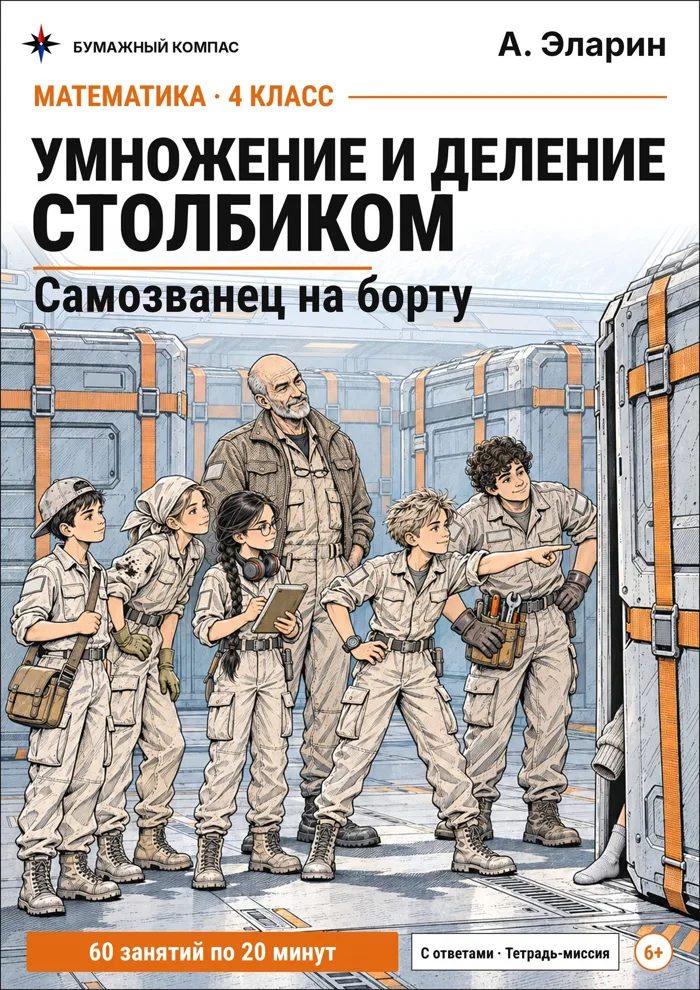

Порядок действий
Сначала скобки, потом умножение и деление, потом сложение и вычитание. Разбор по шагам, частые ошибки и примеры для печати.
Три правила
- Если в выражении есть скобки, сначала выполняют действия в скобках.
- Затем умножение и деление — по порядку, слева направо.
- Затем сложение и вычитание — тоже слева направо.
Если в выражении только сложение и вычитание (или только умножение и деление), считают просто слева направо. В школе номера действий пишут над знаками ещё до вычислений — так меньше шансов перепутать порядок.
Со скобками: 56 : 7 + 3 × (12 − 4)
- Расставляем порядок: сначала действие в скобках, затем умножение и деление слева направо, потом сложение и вычитание слева направо. Номера пишем над знаками.
- 1 12 − 4 = 8
- 2 56 : 7 = 8
- 3 3 × 8 = 24
- 4 8 + 24 = 32
- Ответ: 56 : 7 + 3 × (12 − 4) = 32.
Без скобок: 90 − 6 × 7 + 18 : 3
- Расставляем порядок: сначала умножение и деление слева направо, потом сложение и вычитание слева направо. Номера пишем над знаками.
- 1 6 × 7 = 42
- 2 18 : 3 = 6
- 3 90 − 42 = 48
- 4 48 + 6 = 54
- Ответ: 90 − 6 × 7 + 18 : 3 = 54.
Частые ошибки
Подряд слева направо
Вычитание стоит первым, и ребёнок делает его первым: 90 − 6 = 84, 84 × 7 = 588. А умножение выполняют раньше вычитания.
Умножение «главнее» деления
Умножение и деление равноправны — выполняются слева направо: 48 : 6 = 8, 8 × 2 = 16.
Не заметил скобки
Скобки меняют порядок: 12 + 8 = 20, 20 × 3 = 60. Без скобок было бы 12 + 24 = 36.
Лист с примерами
Выражения в два-три действия, со скобками и без. Ответы внизу вверх ногами; с секретным словом — шифровка.
Нажмите на лист, чтобы рассмотреть его в полный размер.
Порядок действий
- (28 + 17) : 3 × 6 =
- 3 × (13 − 8) + 39 =
- (73 − 17) : 8 =
- (14 + 19) × 6 =
- (111 − 39) : 9 =
- (12 + 24) × 5 =
- 41 + 9 × 8 =
- (17 + 5) × 5 =
- (91 − 11) : 8 =
- (96 − 16) : 8 =
- 174 − (28 + 3) × 4 =
- 192 : 8 + 9 × 32 =
- (84 − 12) : 9 =
- 6 × (7 − 5) + 38 =
- (54 − 38) : 8 =
- (40 + 16) : 8 × 5 =
- (29 + 28) × 6 =
- (8 + 16) : 6 × 3 =
- 80 − 7 × 7 =
- (19 + 28) × 6 =
Самозванец на борту

Умножение и деление столбиком: Самозванец на борту
Тетрадь-детектив для 4 класса: столбик и уголок, задачи на движение и стоимость, порядок действий.
- 60 вахт по 20 минут: столбик и уголок на однозначное и двузначное, нули в частном, остаток
- Задачи на движение, стоимость и порядок действий
- Радиограммы, кодовые замки и аварийные вахты с контрольной суммой
- Ответы на отрезной полоске и в конце; PDF A4 для домашнего принтера
На Литрес можно бесплатно полистать начало книги.
Коротко о главном
Что делать, если скобки внутри скобок?
Начинать с самых внутренних, затем переходить к внешним.
Когда проходят порядок действий?
В учебнике Моро скобки появляются уже во 2 классе, правила с умножением и делением — в 3 классе. В 4 классе выражения становятся длиннее, с многозначными числами.
Зачем писать номера над знаками?
Чтобы сначала решить, в каком порядке считать, и только потом считать. Так не приходится держать правила в голове во время вычислений.